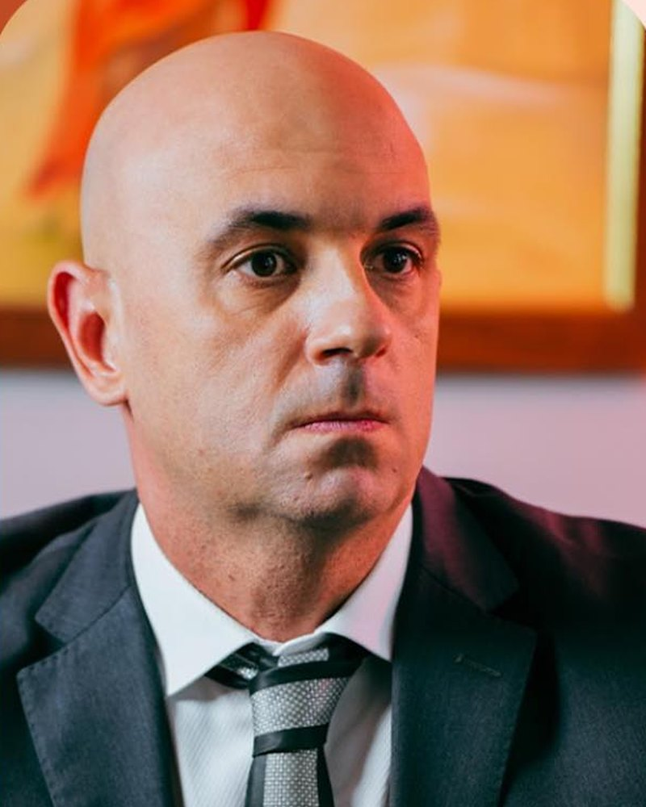
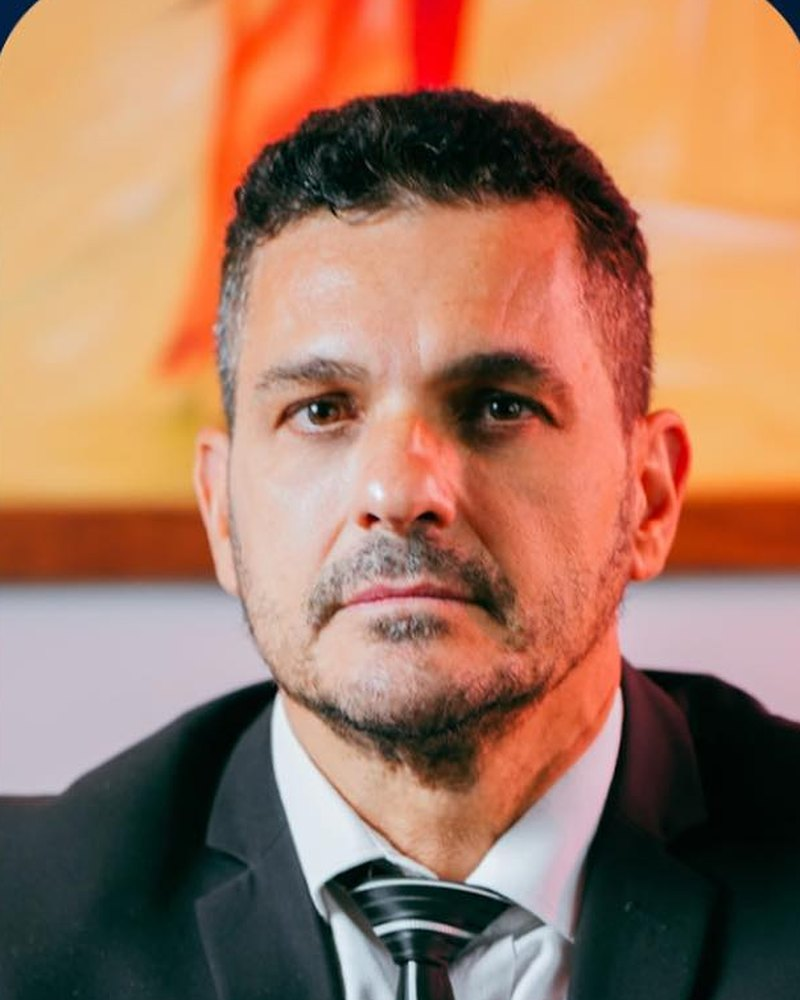

Direito do Trabalho
Atuação em reclamações trabalhistas, horas extras, reconhecimento de vínculo, acidente de trabalho e consultoria preventiva para empresas.
Falar sobre esse casoO Garcia & Antunes atua há mais de 20 anos em Santos e na Baixada Santista, com acompanhamento direto dos sócios em cada caso.
Serviços
O escritório atua nas principais frentes do contencioso e da consultoria jurídica, com condução integral do caso pelo mesmo corpo de advogados, do primeiro atendimento ao encerramento do processo.
Atuação em reclamações trabalhistas, horas extras, reconhecimento de vínculo, acidente de trabalho e consultoria preventiva para empresas.
Falar sobre esse caso
Desbloqueio de motoristas em gerenciadoras de risco, exclusão de apontamentos indevidos e defesa de transportadoras, em todo o Brasil.
Falar sobre esse caso
Atuação em autos de infração, liberação de carga importada, pena de perdimento e mandado de segurança contra exigências indevidas.
Falar sobre esse casoAtuação em conflitos civis, contratos, indenizações, cobranças, responsabilidade civil, direito do consumidor e questões condominiais.
Falar sobre esse casoDefesa em inquérito policial e ação penal, acompanhamento de investigação, medidas cautelares, habeas corpus e recursos criminais.
Falar sobre esse caso

Quem somos
O Garcia & Antunes Sociedade de Advogados, que reúne mais de 20 anos de experiência jurídica, tem origem na advocacia iniciada por Manoel Rogelio Garcia em Santos, no ano 2000. O escritório se consolidou no contencioso trabalhista e cível da cidade e da região portuária, sobre um princípio que orienta a banca até hoje: o cliente é atendido pelo advogado que conduz o seu caso, sem intermediários.
Em 2013 a atuação foi formalizada como sociedade, ao lado de Daniel de Lima Antunes. Em 2022 integrou-se ao quadro societário Rogério Garcia, segunda geração da família na advocacia, responsável pela frente dedicada ao transporte rodoviário de cargas, com atendimento em todo o território nacional.
Composto por três sócios e sediado na sala 73 do Edifício Comércio Exterior, no Centro de Santos, o escritório atende empresas e pessoas físicas nas áreas trabalhista, cível, criminal e aduaneira. A estrutura enxuta é uma escolha: garante que cada demanda seja conduzida diretamente por um dos sócios.
Como trabalhamos
Atendimento personalizado, sem triagem e sem intermediários: o cliente trata diretamente com o advogado responsável pelo seu caso.
Atuação contínua nas varas da Baixada Santista desde 2000, com conhecimento da realidade local e da rotina jurídica da região portuária.
Antes de qualquer contratação, o cliente recebe uma avaliação franca das possibilidades, dos riscos e dos prazos envolvidos. Sem promessa de resultado.
Sede em Santos/SP e acompanhamento de processos em outras comarcas e estados, com destaque para a frente de transporte rodoviário de cargas.
Sócios

Sócio fundador · OAB/SP 175.343
Advogado em Santos desde 2000, formado pela Unimes, com pós-graduação em Processo Civil e em Direito Marítimo e Aduaneiro. Deu origem ao escritório e à forma de trabalhar que a banca mantém até hoje.
Sócio desde 2013 · OAB/SP 237.484
Advogado em Santos desde 2005, formado pela Unimes, com pós-graduação em Processo Civil e em Direito Marítimo e Aduaneiro. Divide com Manoel a formação nas matérias que a rotina do porto cobra de quem advoga na cidade.
Sócio desde 2022 · OAB/SP 345.882
Segunda geração da família na advocacia. Inscrito na OAB/SP em 2014, formado pela Unisantos, com pós-graduação em Direito e Processo do Trabalho. Responde pela área trabalhista e conduz a frente de transporte rodoviário de cargas.
Conteúdo
Conteúdo jurídico sobre direito do trabalho, transporte de cargas e comércio exterior, produzido pelos advogados do escritório. Caráter meramente informativo — não substitui a análise de um caso concreto.
 Transporte de cargas
Transporte de cargas12 de julho de 2026
O que é o apontamento, por que ele trava o motorista e os caminhos administrativos e judiciais para revê-lo.
Ler artigoAduaneiro28 de junho de 2026
Os motivos mais comuns de retenção, o risco de pena de perdimento e quando cabe mandado de segurança contra a exigência.
Ler artigo Trabalhista
Trabalhista15 de junho de 2026
O acervo que a empresa precisa ter organizado antes da citação, e por que a prova se monta muito antes da audiência.
Ler artigoEnvie um resumo do caso pelo WhatsApp, com os documentos de que dispuser. A equipe analisa e retorna explicando o cenário, os caminhos possíveis e as condições de atuação.
Falar com advogado →Dúvidas
Atuamos em Direito do Trabalho, Aduaneiro e Comércio Exterior, Cível e Criminal, além de uma frente dedicada ao transporte rodoviário de cargas. O trabalhista, com destaque para o setor de transporte, é a principal área da banca.
Os dois. O escritório atende pessoas físicas em questões trabalhistas, cíveis, criminais e de transporte, e empresas — de transportadoras a importadores — em contencioso trabalhista, aduaneiro e cível. Cada caso é conduzido por um dos sócios, conforme a área.
Sim. Na frente aduaneira, avaliamos o motivo da retenção, o risco de perdimento e o cabimento de medida judicial. No transporte de cargas, analisamos o apontamento em gerenciadora de risco e os caminhos para revê-lo. Em ambos, a análise dos documentos vem antes de qualquer medida.
Sim. A sede fica em Santos/SP, mas o atendimento também é realizado de forma remota, e o escritório acompanha processos em outras comarcas e estados, conforme a necessidade do caso.
Você envia um resumo do que aconteceu pelo WhatsApp. Pedimos os documentos relevantes, analisamos e retornamos explicando o cenário, os caminhos possíveis e as condições de atuação. Só depois disso se fala em contratação.
Não. Nenhum advogado pode garantir resultado — é vedado pelo Código de Ética e Disciplina da OAB. O que o escritório faz é apresentar com transparência as chances, os riscos e os prazos envolvidos, para que o cliente decida com informação.
Contato
Rua General Câmara, 141 — sala 73
Edifício Comércio Exterior · Centro
Santos/SP · CEP 11010-906
(13) 3224-3357
Telefone fixo: (13) 3224-3357
WhatsApp: (13) 98150-1270
Seg a sex, das 9h às 18h. Atendimento em todo o Brasil na frente de transporte de cargas.
contato@garciaeantunesadvogados.com.br